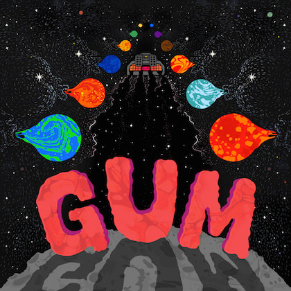

|  |
GUM Delorean Highway Spinning Top Music 30 May 2014 Review by Luke Stefanac |
Cruising back from the future at around 88 mph, GUM has unveiled his debut album ‘Delorean Highway’, a sonic adventure that stretches far and wide through the mind of Jay Watson. While better known for his work with Tame Impala and Pond, Jay’s first solo offering has proven that he’s someone that doesn’t take his foot off the accelerator, driving in the right direction. Basking in the glow of the psychedelic musings from the 70s and 80s, ‘Delorean Highway’ is an album comprised of songs woven with melodies and hooks that take up residence in the back of your mind, lingering for days on end. Tied together by the fuzzy riffs and echoing vocals, the eclectic set of songs are cleverly crafted, evoking images of grandeur and glory, represented perfectly by the title track. Beginning completely washed in reverb, the pulsing drums and enveloping synths calmly float along until the fuzzed out riffs signal for take off, driving everything higher and higher. Similarly, the latest single The Sky Opened Up epitomises the old school psych influence, with the delay laden guitars and underlying bass lines providing the perfect platform for Jay’s vocals to evoke the whimsical imagery laced throughout the album. Topped off with the face melting chorus, the track strikes a balance between the sparkly cleans and epic fuzz heard with the rest of the album. Embodying the latter, 21st Century Radiation embraces the fuzz and uses it as the driving force - conjuring a wild excitement from the other instruments and resulting in the bouncing fuzzed out number. Coupled with the playful vocals that are apparently inherent in Jay’s musings, the song and rest of the album prove to be an excellent example of the brilliant Australian storytelling prevalent today, successfully evoking nostalgia while writing its own chapter. Even the name ‘Delorean Highway’ proves to be a perfect fit for the album, as it parallels the songs’ ability to not only evoke the memories of days gone by, but also to offer an anticipation of what’s to happen - as GUM effortlessly embodies the essence of Marty McFly and fuses it with his own adventures. ‘Delorean Highway’ is an absolutely fantastic listen, with each track flicking through genres and creating their own. The coupling of the image laden vocals and effects driven guitars creates an experience that is sure to take you on a journey, or even soundtrack escapades of your own. Originally written for City And Sound. |